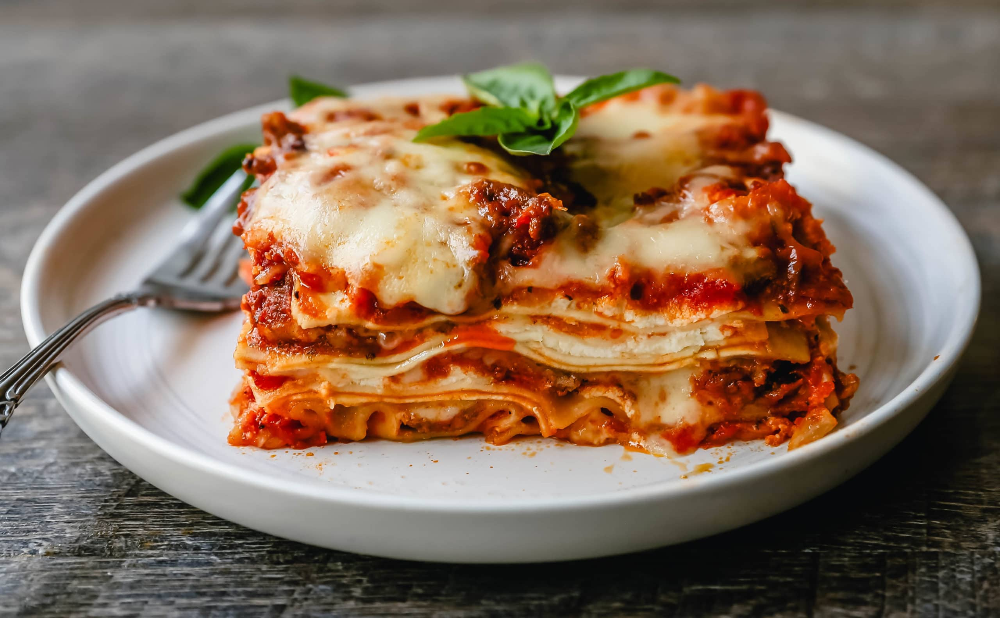

Lasagna

Description
You need cooked meat, chease, and cook noodles. Then lear them and fry them in oven
Ingrediends
- meat
- Cheese
- Noddles
- Tomatoes
- Egg
Steps
- Cook the meat.
- Mix tomato purey, onions, ginger-galik pest with the meat.
- Cook the Lasagna noodles with salty boiled water.
- Mix egg with cheese.
- Layer them one after another with chesse on the top
- Repeat the Layer
- Put them into the oven for 29 minutes.